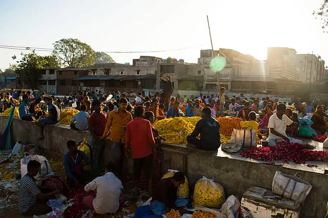
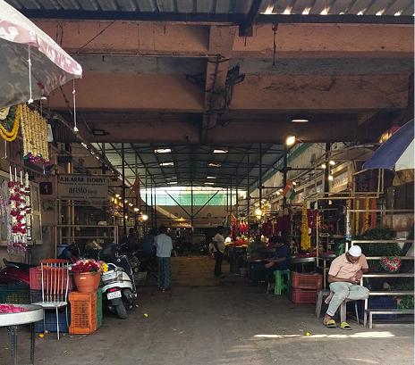
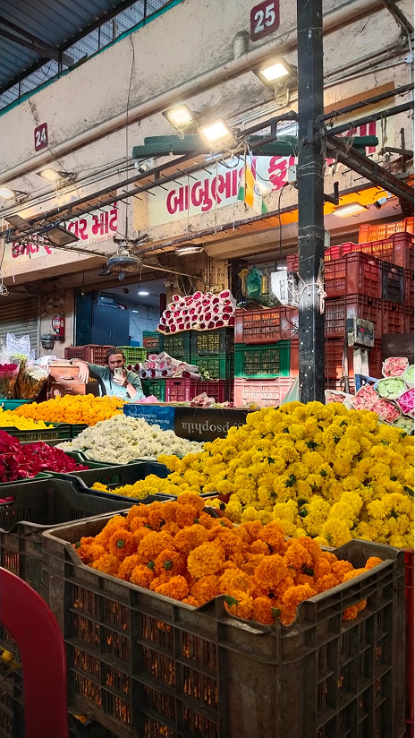
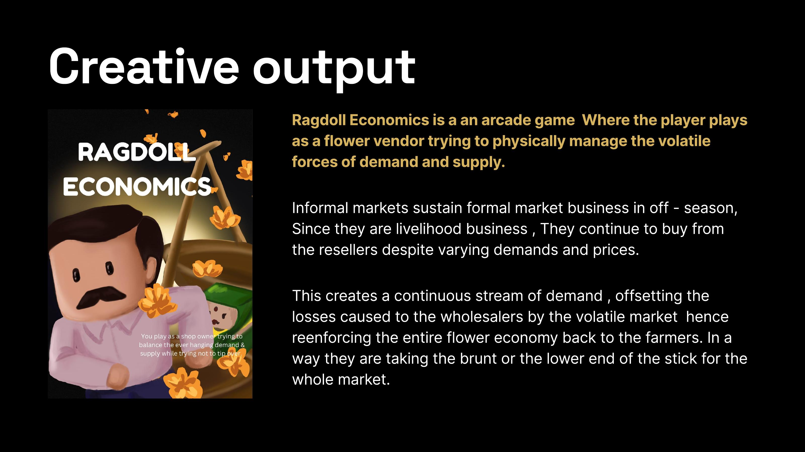
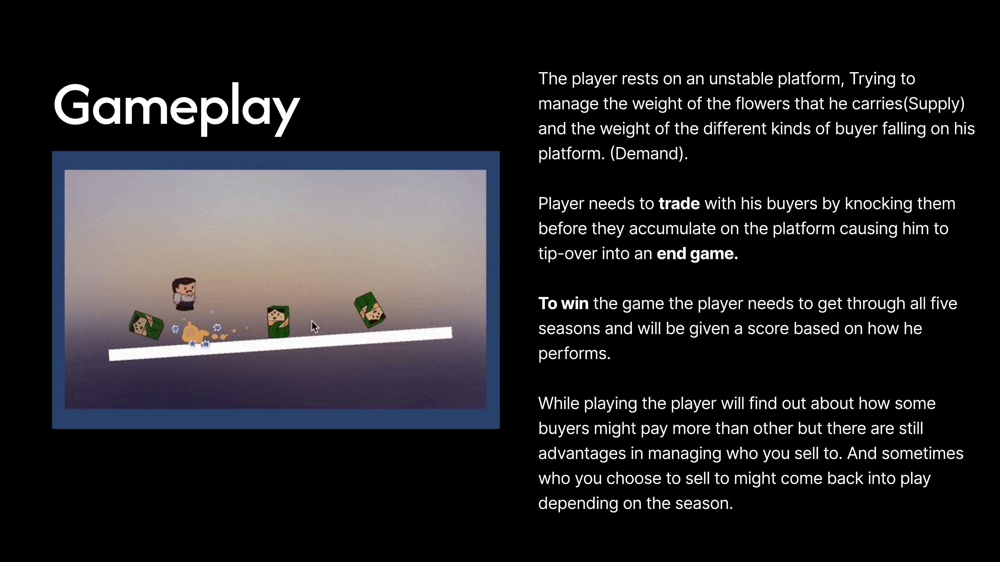

The market changes with time.
Different vendor groups serve different customer rhythms throughout the day.
FIELD RESEARCH · MARKET SYSTEMS · AHMEDABAD
Understanding how Ahmedabad's formal and informal flower markets depend on one another.

RESEARCH QUESTION
Across four field days, we visited the market in different pairs and at different times of day.
We observed, sat with vendors, talked about their routines, followed how people moved through the market, and returned at different hours to understand what changed.
We spoke with roughly 8–9 vendors, a tea-stall owner, and 2–3 customers.
My role: I conducted many of the interviews with outside vendors, who often spoke most comfortably in Gujarati, and contributed to persona synthesis, stakeholder mapping and visual communication.



Select a group to see how its day unfolds.
The market is a rhythm, not a static place.
The formal market consists of APMC-recognized wholesale and retail sellers. They buy directly from farmers and producers and supply the wider market.
Flowers then move through informal resellers, retail buyers and consumers — creating dependencies between parts of the market that initially looked separate.
Many of the outside vendors spoke most comfortably in Gujarati. Building familiarity through sitting, talking and spending time with them became part of the research itself.
One recurring concern was having to relocate their stalls when AMC officials or police arrived because the roadside stalls did not have formal permission and could contribute to traffic congestion.
“We have to relocate the stalls, if the AMC people show up.” — recurring interview response documented in the field study
ACCESSIBILITY CAN LOOK LIKE DISORDER.
Customers could stop quickly, buy flowers and leave without finding parking or walking into the market.
The outside vendors also bought their flowers from the formal market inside, creating a direct economic relationship between the two spaces.
The formal market supplies flowers that later move through roadside vendors and reach everyday buyers.
We mapped the people and forces connected to the market, then grouped them by participation to understand who sits closest to its everyday functioning.
On smaller screens, scroll horizontally to explore the full map.
Different vendor groups serve different customer rhythms throughout the day.
Informal vendors source from the formal market and redistribute through roadside selling.
Its visibility and convenience enable spontaneous purchases and contribute to how the market is encountered in the city.
Seasonality changes demand, yet informal sellers continue to move stock through the system.
We used card sorting with informal vendors to understand how they prioritised everyday expenses.
The exercise surfaced stock purchase, commuting, ice, light rental and garland thread as recurring costs.
TEAM CREATIVE OUTPUT
There wasn't a conventional service or product solution at the end of the research.
Instead, the team explored how the system itself could be made understandable through play.


What initially looked like a distinction between a formal market and an informal roadside market became a much more interconnected relationship.
Spending time in the market made it difficult to understand one without looking at the other. The same space changed across hours, people, routines and economic conditions.
The biggest takeaway was that systems that appear messy from the outside can contain their own forms of balance, dependence and adaptation.